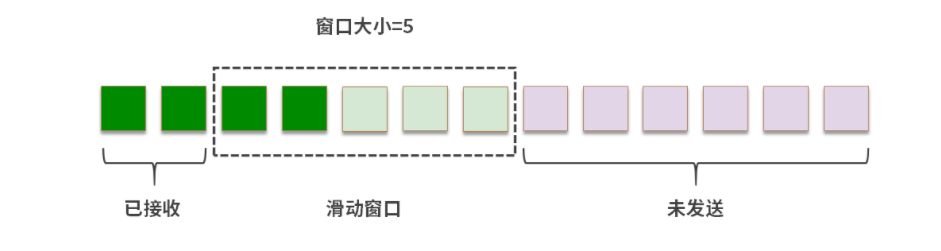

1.TCP 为什么握手是 3 次、挥手是 4 次？
- 如果一个Host主动向另一个Host发起连接，称为SYN，请求同步；
- 如果一个Host主动断开请求，称为FIN，请求完成；
- 如果一个Host给另一个Host发送数据，称为PSH，数据推送。


TCP是一个双工协议，建立连接的时候，连接双方都需要向对方发送SYN和ACK。握手阶段没有繁琐的工作，因此一方向另一方发起同步(SYN)之后，另一方可以将自己的ACK和SYN打包作为一条消息回复，因此是3次握手。
挥手阶段，双方都可能有未完成的工作。收到挥手请求的一方，必须马上响应(ACK)，表示收到了挥手请求。最后等所有工作结束，再发送请求中断连接(FIN)，因此是4次挥手。
2.TCP协议是如何恢复数据的顺序，TCP拆包和粘包的作用是什么？
TCP拆包：将任务拆分处理，降低整体任务出错的概率，以及减小底层网络处理的压力。拆包过程中需要保证数据经过网络传输，又能恢复到原始的顺序。TCP利用发送字节数(Sequence Number)和接收字节数(Acknowledgement Number)的唯一性来确定封包之间的顺序关系(无论是Seq还是ACK，都是针对对方而言的。是对方发送的数据和对方接受的数据)。粘包是为了防止数据量过小，导致大量的传输，而将多个TCP段合并成一个发送。
3.滑动窗口和流速控制
深绿色：已经收到了ACK的段 浅绿色：发送了，但是没有收到ACK的段 白色：没有发送的段 紫色：暂时不能发送的段。
有两个封包到达，标记为绿色。

滑动窗口可以向右滑动
重传
如果部分数据没能收到ACK，如段4迟迟没有收到ACK。
此时滑动窗口只能右移一个位置
如果段4重传成功(接收到ACK)，那么窗口就会继续右移。如果段4发送失败，还是没能收到ACK，那么接收方也会抛弃段5、6、7。这样从段4开始之后的数据都需要重发。
快速重传
例如段1、2、4到了，但是3没到。接收方可以发送多次3的ACK(不发段4的ACK)。如果发送方收到多个3的ACK，就会重发段3。这和超时重发不同，是一种催促机制，接收方希望催促发送方尽快补全某个TCP段。
实际操作中，每个TCP段的大小不同，限制数量会让接收方的缓冲区不好操作，因此实际操作中滑动窗口的大小单位是字节数。
总结
滑动窗口是TCP协议控制可靠性的核心。发送方将数据拆包，变成多个分组。然后将数据放入一个拥有滑动窗口的数组，依次发出，仍然遵循先入先出的顺序，但是窗口中的分组会一次性发送。窗口中序号最大的分组如果收到ACK，窗口就会发生滑动；如果有分组为收到ACK，则会滑动到该窗口。
在多次传输中，网络的平均延迟往往是相对固定的，这样TCP协议可以通过发送方和接收方协商窗口大小控制流速。
4.TCP和UDP的区别
UDP
UDP，目标是在传输层提供直接发送报文的能力。Datagram是数据传输的最小单位，UDP协议不会帮助拆分数据，它的目标只有一个，就是能发送报文。
UDP的可靠性仅仅就是通过Checksum保证。如果一个数据封包Datagram发生了数据损坏，UDP可以通过Checksum纠错或者修复。
UDP与TCP的区别
目的差异
TCP：提供可靠的网络传输。
UDP：提供报文交换能力基础上尽可能的简化协议。
可靠性差异
TCP：可靠，收到的数据会进行排序。
UDP：不可靠，只管发送数据包。
连接vs无连接
TCP：面向连接，会有握手的过程，传输数据必须先建立连接。
UDP：无连接协议，数据随时都可以发送，只提供发送封包的能力。
流控技术
TCP在发送缓冲区中存储数据，并在接收缓冲区中接收数据，如果接收缓冲区已满，接收方无法处理更多数据，并将其丢弃。UDP没有提供类似的能力。
传输速度
UDP协议简化，封包小，没有连接、可靠性检查等，因此单纯从速度上讲，UDP更快。
理论上，任何一个用TCP协议构造的成熟应用层协议，都可以UDP重构。想要把网络优化到极致，就会用UDP作为底层技术，然后在UDP基础上解决可靠性。
TCP场景：
- 远程控制(SSH)
- File Transfer Protocol(FTP)
- 邮件(SMTP、IMAP等)
- 点对点文件传输(微信等)
UDP场景
- 网络游戏
- 音视频传输
- DNS
- ping
- 直播
模糊地带
- HTTP(目前以TCP为主)
- 文件传输
TCP最核心的价值就是提供封装好的一套解决可靠性的优秀方案。UDP最核心的价值是灵活、轻量、传输速度快。场景不同选择不同。
5.IPv4
IP协议自身不能不能保证可靠性(数据无损的到达目的地)。
IP协议接收IP协议上方的Host-To-Host协议传来的数据，然后进行拆分，这个能力叫做分片。然后IP协议为每个片段增加一个IP头，组成一个IP封包。之后，IP协议调用底层的局域网(数据链路层)传送数据。最后IP协议通过寻址和路由最终将封包送达目的地。
延迟：指1bit数据从网络的一个终端传送到另一个终端需要的时间。
吞吐量：单位时间内可以传输的平均数据量。如bit/s(bps)。
丢包率：指发出去的封包没有到达目的地的比例。
IPv4地址
4个8喂排列而成，总共可以编址43亿个地址。
如103.16.3.1
寻址与路由的区别
寻址就是通过地址找设备，比如根据地址找到一个公寓。在 IPv4 协议中，寻址找到的是一个设备所在的位置。路由的本质是路径的选择，就好像知道地址，但是到了每个十字路口，还需要选择具体的路径。
所以，要做路由，就必须理解地址，也就是借助寻址的能力。找到最终的设备又要借助路由在每个节点选择数据传输的线路。因此，路由和寻址相辅相成。
6.IPv6
相似点
工作原理与IPv4类似，分成切片、增加封包头、路由(寻址)几个阶段。
不同点
IPv6地址
IPv4的地址是4个8位，总共32位，如103.28.7.35，每一个是8位，用0-255的数字表示；IPv6的地址是8个16位，总共128位，如0123:4567:89ab:cdef:0123:4567:89ab:cdef，通常用16进制表示。
IPv6的寻址
全局单播
将消息从一个设备传到另一个设备，和IPv4的发送/接收数据大同小异。IPv6地址太多，因此不需要子网掩码，而是直接将IPv6的地址分区即可。
本地单播
在局域网中，实现设备到设备的通信。本地单播必须以fe80开头，类似IPv4中以127开头。
分组多播
将消息发送给多个接收者。
任意播
将消息发送给多个接收方，并选择一条最优的路径。
IPv6和IPv4的兼容
一个IPv6的客户端想访问IPv4的服务器
- 客户端通过DNS64服务器查询AAAA记录。(DNS64：一种解决IPv4和IPv6兼容问题的DNS服务，会把IPv4和IPv6地址同时返回)
- DNS64服务器返回含IPv4地址的AAAA记录。
- 客户端将对应的IPv4地址请求发送给一个NAT64路由器。
- NAT64路由器将IPv6地址转换为IPv4地址，从而访问IPv4网络，并收集结果。
- 消息返回客户端。
两个IPv6网络被IPv4隔离
隧道的本质就是在两个IPv6的网络出口网关处，实现一段地址转换的程序。
Tunnel是什么？
Tunnel就是隧道，两个网络，用隧道连接，位于两个网络中的设备通信，都可以使用这个隧道。隧道是两个网络间用程序定义的一种通道。具体来说，如果两个IPv6网络被IPv4分隔开，那么两个IPv6网络的出口处(和IPv4的网关处)就可以用程序(或硬件)实现一个隧道，方便两个网络中设备的通信。
7.BIO、NIO和AIO有什么区别？
BIO接口设计会直接导致当前线程阻塞。NIO的设计不会触发当前线程的阻塞。AIO为I/O提供了异步的能力，也就是将I/o的响应程序放到一个独立的时间线上去执行。但是通常AIO的提供者还会提供异步编程模型，就是实现一种对异步计算封装的数据结构，并且将异步计算同步回主线的能力。
通常情况下，这3种API都会伴随I/O多路复用。如果底层用红黑树管理注册的文件描述符和事件，可以在很小的开销内由内核将I/O消息发送给指定的线程。另外，还可以使用DMA、内存映射等方式优化I/O。
8.怎样实现RPC框架？
调用约定和命名
远程调用一个函数，命名空间+类名+方法名 IP、端口
注册和发现
调用的时候，需要根据字符串(命名)去获取IP和端口(机器和服务)
Redis hash
注册：上线一个服务时，用Redis的hash对象存储它和它对应的IP地址+端口列表。
发现：根据RPC服务的名称(命名空间+类名+方法名)查找到提供服务的IP + 端口清单并指定某个 IP + 端口(提供服务)
不足：所有RPC调用着都去Redis查询，压力较大，增加缓存，缓存和注册表之间数据不一致。
Zookeeper提供订阅，让RPC调用者订阅到服务地址的变更，及时更新自己的缓存。
多路复用
提升吞吐量：1.顺序传输 2.切片传输。
负载均衡
负载均衡可以看作发现模块的一个子组件，请求到达RPC的网关(或某个路由程序)后，发现组件会提供服务对应的所有实例(IP+端口)，然后负载均衡算法会指定其中一个响应请求。
可用性和容灾
- 当一个服务实例崩溃的时候，发现模块及时从注册表中删除这个服务实例。
- 注册表和RPC调用者之间存在不一致现象，而且注册表的更新本身也可能滞后。如确认一个服务有没有崩溃，可能需要一个心跳程序持续请求这个服务，调用到一个不存在或崩溃的服务，需要自己重新发现组件申请新的服务实例(地址+端口)。
- 临时访问量剧增，需要扩容的场景，上线更多的容器，并且去注册。
常见问题
1.一台内存8G左右的服务器，理论上可以同时维护多少个连接？
TCP连接上限受限于机器的内存，假设一个TCP连接需要占用的最小内存是8k(发送、接收缓存各4k，当然还要考虑socket描述符等)，那么最大连接数为：8 * 1024 * 1024 / 8 = 1048576个，即约为100w个TCP长连接。
但是如果单机建立太多的连接，会报Cant assign requested address的异常，这是因为客户端连接服务端时，操作系统要为每个客户端分配一个端口号，端口号会更快用尽。
2.127.0.0.1，localhost，0.0.0.0 有什么不同？
127.0.0.1：本地回环地址，发送到loopback上的数据会被转发到本地应用。
localhost：指代本地计算机，用于访问绑定在loopback上的服务。localhost是一个主机名，不仅可以指向IPv4的本地回环地址，也可以指向IPv6的本地回环地址[::1]。
0.0.0.0：一个特殊的目的IP地址，称作不可路由IP地址，它的用途会被特殊规定。通常情况下，当把一个服务绑定到0.0.0.0，相当于把服务绑定到任意的IP地址。比如一台服务器上有多个网卡，不同网卡连接不同的网络，如果服务绑定到0.0.0.0就可以保证服务在多个IP地址上都可以用。